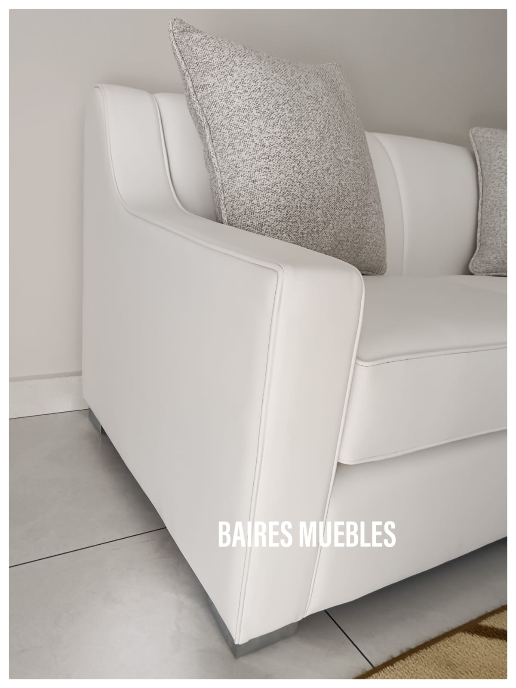
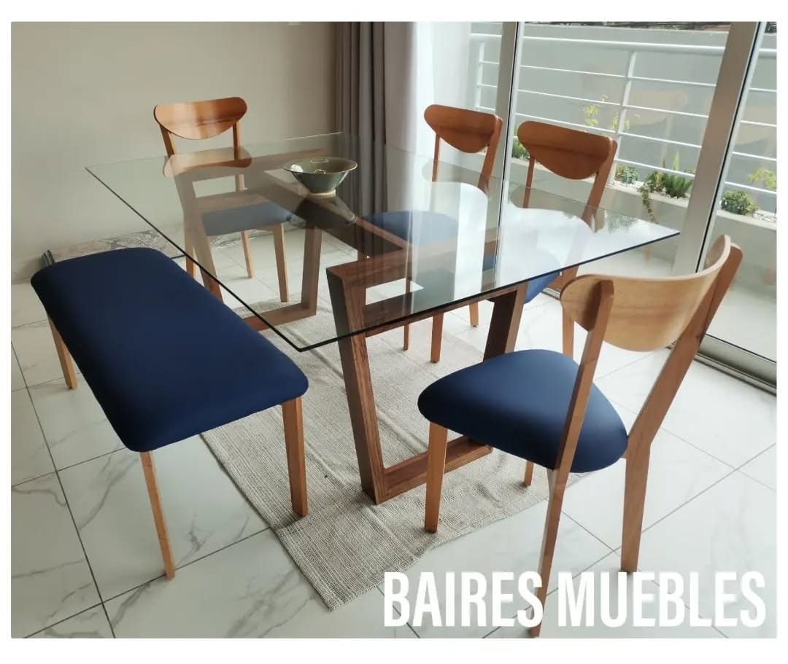
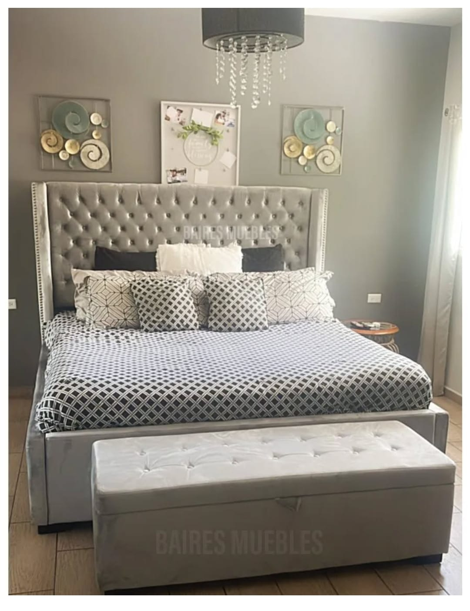

Nuestro Proceso
1
Diseño
Creación de bocetos y planos detallados
2
Selección de Materiales
Maderas nobles y materiales de primera calidad
3
Construcción
Artesanos expertos dan forma a cada pieza
4
Acabados
Barnices y tratamientos para proteger y embellecer